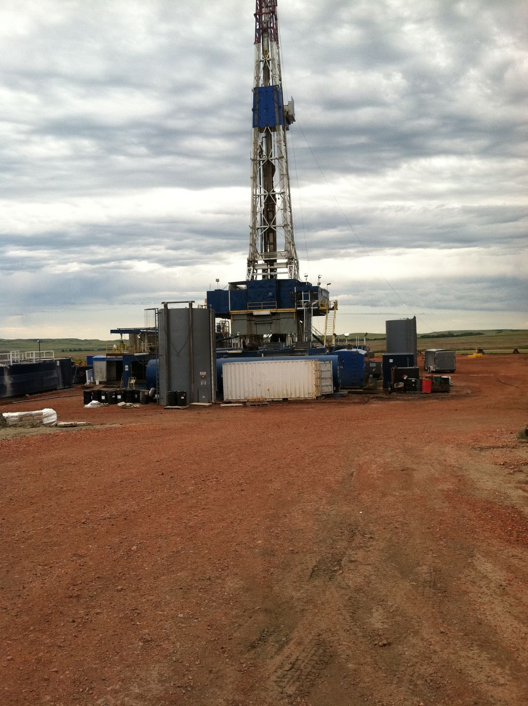
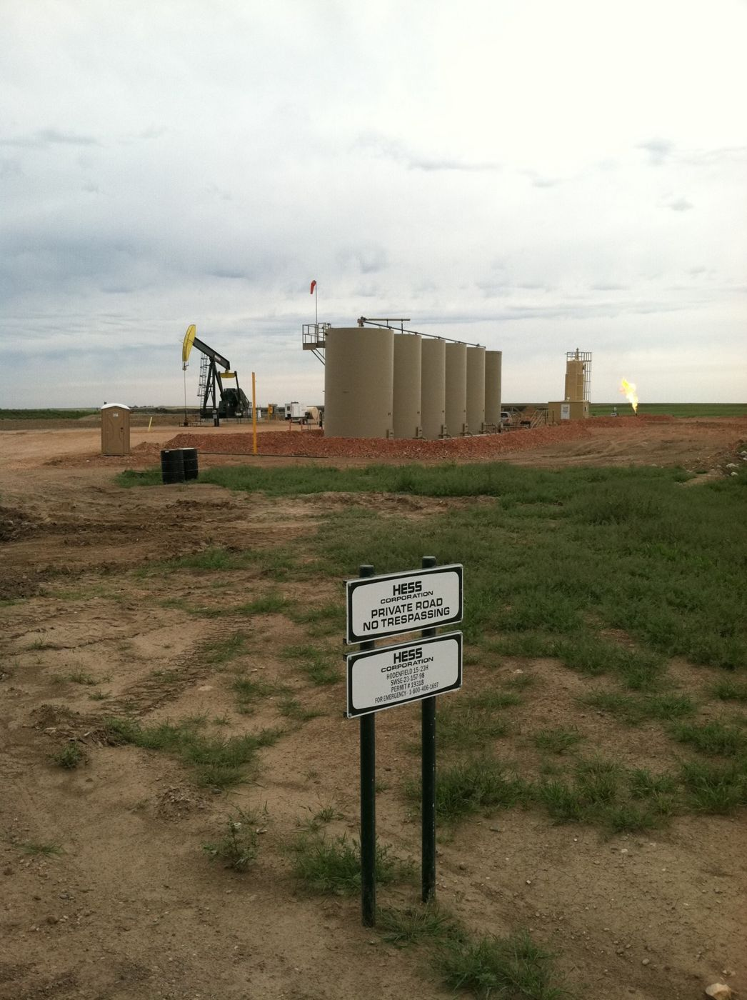
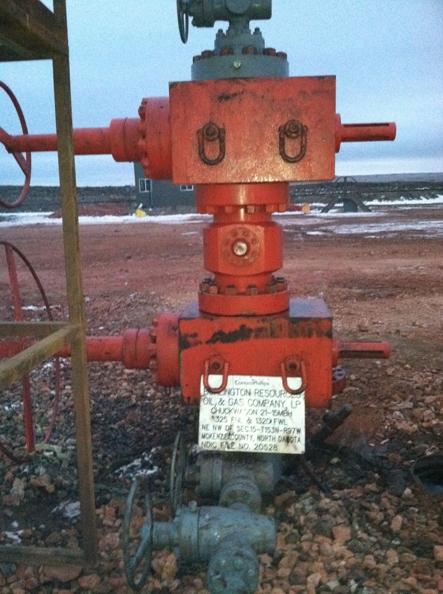

Winter 2011: samples from oil-well site pads near Williston went to an AASHTO-accredited lab, and a complete mix design came back showing the product and cement together reached two to three times the strength of cement alone. The pads were never built with it — Hess went with wooden rig matting on schedule pressure — and this page presents it as what it is: a lab-validated design with the field photos of the ground it was designed for.
Bakken drilling pads sit on scoria — the red, burned clay-rock of western North Dakota — over heavy native clays, worked year-round through freeze-thaw and a long rainy season. In November 2011, samples of the in-place clays and imported Type 5 aggregate were pulled from well-site pads near Williston (sampled 11/30/11) and sent to Geotechnical Testing Services in Yuma.



The GTS campaign (Lab Log 11-0464/11-0465, November 2011 through May 2012) tested the native clays and aggregate through Proctor, classification, and months of compressive-strength batches. The headline result: at 21 days, 5% cement alone reached 322 psi; cement plus the product reached 664–746 psi — two to three times the strength, in a signed, controlled comparison. The scoria blends were tested for wet/dry strength retention through May 2012.